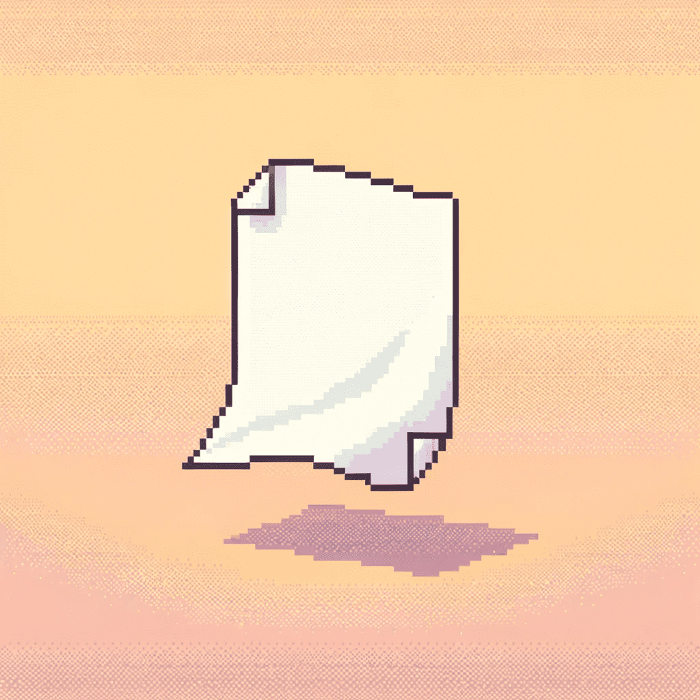

Фритрек и нулевой спринт: Подготовка к работе
</HTML>
Это было самое начало пути. На этом этапе важно было проникнуться основами и настроиться на учёбу. И, возможно, подумать, как новые знания могут повлиять на ваше будущее.
"Классный старт! Всё казалось таким новым, и я абсолютно не знала, чего ожидать. Но было здорово учиться и думать о том, как приобретённые навыки могут изменить моё будущее."
1 спринт: Я — чистый лист

</HTML>
На первых этапах мы работали со страхами и сомнениями, которые часто испытывают новички. Один из них — страх перед чистым листом. Это, конечно же, намного сложнее, чем боязнь куска бумаги. Часто за этим ощущением скрываются более глубокие вопросы: с чего начать? а вдруг будет слишком сложно? что, если я не справлюсь?
"Задание первого спринта было для меня по-настоящему шокирующим. 'Создать проект с нуля? Просто так?' - паника охватила меня. Я перерыла весь интернет в поисках подсказок, но быстро поняла, что ответов там нет. Так началась моя бессонная ночь: я, мой компьютер и тишина. Сидя до четырех утра, я по кусочкам, опираясь на знания из тренажеров, собирала сайт. Это было ужасно, но когда я пошла спать, я знала, что самое сложное позади. И хоть это и вымотало меня, но ощущение, что я сделала это сама, было непередаваемо."
1 спринт: А если не получится?
<CSS>
Первый проект — позади! Но это всё ещё самое начало пути. Радость могла быстро померкнуть и смениться ожиданием провала. Или вы, наоборот, могли вдохновиться успехами и поверить в себя.
"Какое облегчение было сдать первый проект!После этой победы, казалось, я могу всё. Моя уверенность росла с каждым пройденным заданием.Всё, что раньше казалось страшным и непосильным, теперь было решаемо."
2 спринт: Погоня за идеалом
<desigions>
На этом этапе вы уже достаточно разбирались в основах вёрстки, чтобы понять, как много ещё впереди. Вы могли попытаться погнаться за идеалом и понять, что он недостижим. А, может, вы вовсе и не подвержены перфекционизму и вместо того, чтобы сделать идеально, старались просто сделать.
"Достичь идеала сложно. Но не невозможно. В своей работе я стараюсь не упускать детали, внимательно отношусь к замечаниям ревьюера и исправляю даже мелкие недочеты."
2 спринт: О тех, кто рядом
<care>
Всё это время вы были не одиноки (хотя, возможно, иногда и чувствовали, что одни против целого мира). Вас окружали одногруппники, команда сопровождения и просто близкие люди, которым можно пожаловаться, если очередной макет просто так не поддавался. Осваивать что-то новое легче, когда рядом есть единомышленники, не правда ли?
"В конце второго спринта я осознала, что никогда не была одна на своем пути. Благодарю команду Яндекса за поддержку, моих удивительных однокурсников за общие усилия, и, конечно, моего мужа, который поделился своим опытом и дал сил. Даже моя семья и друзья, несмотря на то, что не всегда понимали детали моих занятий, оказывали мне неоценимую поддержку в этом новом увлечении."
3 спринт: Обходные стратегии
<support>
На этом курсе вы постоянно решали разные задачи. В какой-то момент вам могло показаться, что решения просто иссякли. Значит, пришло время посмотреть на задачу под другим углом.
"Когда кажется, что решений нет, нужно просто взять паузу. Походы в спортзал, просмотр фильмов или сериалов, прогулки с собаками или выезды к родственникам на выходных помогали мне возвращаться к работе с новой энергией. И часто ответы приходили сами собой, когда я позволяла себе немного расслабиться."
3 спринт: Когда опускаются руки
<lifes-style: none;>
Во время учёбы часто возникает чувство, когда не знаешь, за что хвататься. Вроде и проектную пора сдавать, и задачи хочется порешать, и в теории получше разобраться, и жизнь не забыть пожить. В такие моменты очень нужна концентрация. Вспомните, откуда вы её черпали.
"Когда дел слишком много, находить концентрацию помогает чёткое понимание своих приоритетов. Я училась находить время для самых важных вещей, даже если это означало работу в поездках или за ноутбуком поздно ночью, когда дома все спали. Этот подход помогал мне не терять фокус, несмотря на усталость и стресс."
«Сейчас я здесь»
<experience>
Сейчас вы уже очень много знаете о вёрстке. Но это только начало. Во-первых, впереди ещё много материала про «красотищу». Во-вторых, с окончанием курса учёба не заканчивается. Вёрстка — это целый мир. И этот мир постоянно меняется. Познать его полностью не получится, но это тот случай, когда важен сам процесс познания. Ведь часто путь — и есть результат.
"Учиться чему-то новому можно бесконечно, особенно в мире технологий, который неумолимо меняется. Это не пугает, а вдохновляет: каждый приобретенный навык открывает передо мной ещё больше возможностей.К тому же, у меня большие планы. У меня полно идей для будущих работ, и я верю, что некоторые из них могут стать по-настоящему популярными. Я чувствую себя полной сил и энергии, чтобы делать следующий шаг в моей карьере и реализовать себя в мире веб-разработки. Это путешествие обещает быть увлекательным, и я не могу дождаться, чтобы увидеть, куда оно меня приведет.